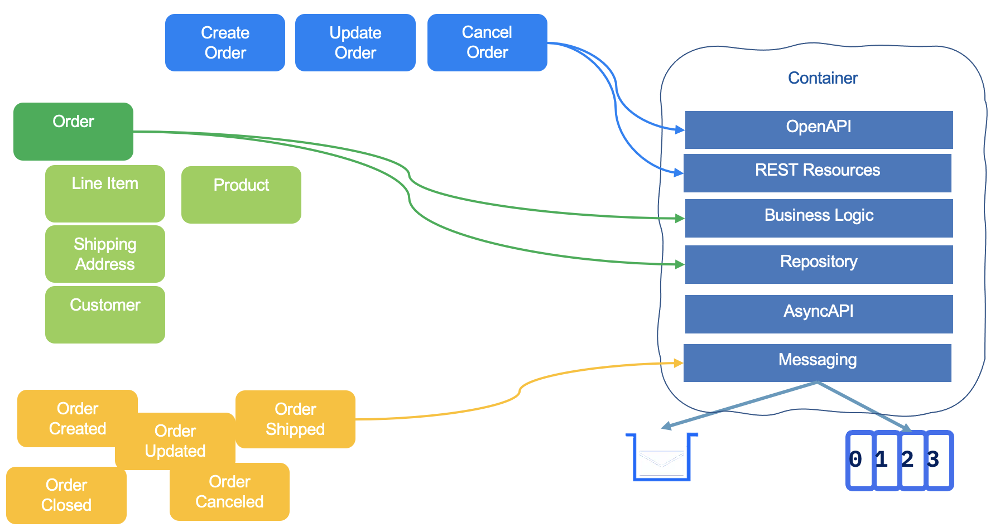

Architecture considerations¶
AWS Lambda helps you to run code without managing server. But this does not mean it is the unique serverless capability in AWS, and you should consider adopting good design principles that we can summarize as:
Design principles for cloud deployment¶
- Stop guessing your capacity needs: use as much or as little capacity as you need, and scale up and down automatically.
- Test systems at production scale, then decommission the development resources.
- Automate to make architectural experimentation easier, using infrastructure as code.
- Allow for evolutionary architectures: the capability to automate and test on demand, lowers the risk of impact from design changes. This allows systems to evolve over time so that businesses can take advantage of innovations as a standard practice.
- Drive architectures using data: In the cloud, you can collect data on how your architectural choices affect the behavior of your workload. This lets you make fact-based decisions on how to improve your workload.
- Improve through game days to simulate events in production. This will help you understand where improvements can be made and can help develop organizational experience in dealing with events.
Microservice and AWS Lambda¶
The Lambda code fits in the function programming paradigm. As a twelve factors app Lambda function has the characteristic of a microservice. The entry point is a unique handler function, which constraint the implementation or enforce implementing message routing. The payload is call event, but is a loose definition as agreed upon in classical event-driven architecture, where it represents something happen as immutable fact. In microservice design, developer has to think about the domain-driven-design (DDD) bounded context. The methodology starts with the event storming practice and applies DDD constructs like Command, Aggregate, Event, Repository... Those elements are the grouping that serve as foundations for the microservice implementation. The following figure illustrates how to move from elements discovered during DDD sessions and a microservice supports the Order Entity:

Figure 1: Event-driven microservice design elements
- The Commands are mapped to APIs
- The Entity and Value Objects will be persisted via a Repository
- Events are defined with schema and produce/consume via a messaging API layer
The common practice to develop microservice is to adopt a test-driven development, which leads to define and tune the API definition bottom-up. The same apply for the business logic, and the event definitions. Which means the API definition and contract are built from code and shared as an external definition using the OpenAPI standard. The same applies for the asynchronous communication of the events. For that the standard is asyncAPI document can be generated from code. In Java world, Quarkus and microprofile facilitate the implementation of microservice. Nodejs has the expressjs library to define API. Code organization helps to support a single unit deployment. For Python, Flask is a common library to expose REST api.
Those practices lead to have one Git Repository per microservice, with infrastructure as code to build a container and deploy to target runtime (Kubernetes cluster, AWS ECS Fargate, AWS Lambda). A microservice development ownership is limited to few persons. Microservices do not need to be event-driven on day one. It is important to know and understand the microservice challenges and the scalability requirements of the service. When the number of service consumers and the number of requests grow above a certain level, and the service level operations are no more well serve, then refactoring are needed to move to the asynchronous, and horizontal scaling (See why EDA is an evolution of SOA).
Lambda to implement microservice¶
While Lambda seems to map to microservice principles of separating an application into distinct units of independent deployment, it is still a function programming. There is nothing wrong about that, but the design and granularity of the business logic to fit into this function handler may violate some other software engineering principles, like encapsulation, clear separation of concern, avoid unnecessary complexity, code duplication. Taking the same DDD elements for the Order microservice, we can try to map it into Lambdas and other services to support the same bounded context:

Figure 2: From DDD elements to Lambda as microservice
The command definitions are done in Amazon API Gateway elements not in the form of OpenAPI. To support the DDD Commands implementation in Lambda there are two choices: 1/ one Lambda per REST resource verbs, or 2/ group in one function handler with routing depending of the HTTP method used.
With the first implementation choice, the microservice is now a group of lambda functions, API gateway construct, Dynamodb tables (or SQL ones, does not matter for this discussion), and queueing for event propagation. The code integrity is done via the Infrastructure as Code (IaC) definition. This IaC can be done with AWS CloudFormation template, CDK or AWS Serverless Application Model SAM.
The AWS Powertool REST API supports the second pattern with annotation. The first solution means duplicate code, and complex infrastructure as code, while the second is more 'microservice' principle oriented, simpler to unit test and to package. When not using AWS Powertool RestOrchestration, the routing logic is boilerplate code with minimum business logic.
def handler(command, context):
httpMethod = command['httpMethod']
if httpMethod == 'GET':
car_id = command['pathParameters']['car_id']
car = getCar(car_id)
return car
elif httpMethod == 'POST':
carStr=command['body']
car=json.loads(carStr)
carOut = createCar(car)
While with RestResolver the boilerplate code is abstracted via annotations:
@app.get("/cars/<car_id>")
def getCarUsingCarId(car_id: str):
def handler(message: dict, context: LambdaContext) -> dict:
return app.resolve(message, context)
Also this is not because the argument of the function is called 'event' that it has the same semantic of a business event in an EDA. This is a message to process as a request, and with API Gateway frontend it is a HTTP request.
When adopting and event-driven implementation, we need to assess if we want to use the Transactional Outbox pattern, by saving the event to a dedicate event table, and use Change Data Capture tool or DynamoDB streaming capability to propagate events to the downstream consumers.
Lambda constructs¶
A Lambda function has three primary components – trigger, code, and configuration.

Figure 3: Lambda constructs
- Triggers describe when a Lambda function should run. A trigger integrates the Lambda function with other AWS services, enabling to run the Lambda function in response to certain API calls that occur in the AWS account. To support microservice implementation using Lambda, the main trigger should be API Gateway.
- An execution environment manages the processes and resources that are required to run the function.
- Configuration includes compute resources, execution timeout, IAM roles (lambda_basic_execution)...
Servers do not run continuously, and a function invocation is time boxed to 15 minutes.
Lambda run time architecture¶
-
The Lambda service is split into the control plane and the data plane. The control plane provides the management APIs (for example,
CreateFunction,UpdateFunctionCode). The data plane is where Lambda's API resides to invoke the Lambda functions. It is HA over multi AZs in same region.Figure 4: Control and Data Planes
-
Lambda Workers are bare metal Amazon EC2 Nitro instances which are launched and managed by Lambda in a separate isolated AWS account which is not visible to customers. Each worker has one to many Firecraker microVMs. There is no container engine. Container image is just for packaging the lambda code as zip does. The following diagram presents the high level components, that are slightly different if the communication with the client is synchronous or asynchronous:
Figure 5: Lambda services high level component view
The event source mapping is a Lambda components that reads from an event source and invokes a Lambda function (see details below).
-
The execution environment follows the life cycle as defined below (time goes from left to right):

Figure 6: Lambda execution environment lifecycle
-
In the Init phase, Lambda creates or unfreezes an execution environment with the configured resources, downloads the code for the function with all the needed layers, initializes any extensions, initializes the runtime, and then runs the function’s initialization code. After init, the environment is 'Warm'. The extension and runtime initializations are part of the
cold start(<1s). - In the Invoke phase, Lambda invokes the function handler. After the function runs to completion, Lambda prepares to handle another function invocation. After the execution completes, the execution environment is "frozen", for reuse by another request. (Warm start)
- During Shutdown phase: Lambda shuts down the runtime, alerts the extensions to let them stop cleanly, and then removes the environment.
Lambda Extension
Lambda supports external and internal extensions. An external extension runs as an independent process in the execution environment and continues to run after the function invocation is fully processed. Can be used for logging, monitoring, integration...
- A function's concurrency is the number of execution environment instances that serve requests at a given time.
-
There is at least one runtime which matches the programming language (Java, Node.js, C#, Go, or Python).
-
Synchronous calls are used for immediate function response, with potential errors returned to the caller. It may return throttles when the number of requests hits the concurrency limit.
A synchronous flow to Lambda explained
Below is a diagram representing an external client application invoking a Lambda function synchronously. The requests reach one of the front end load balancer, which routes the request to a Frontend lambda invoke service. As a multi-AZ service, for high availability, there is no concern of load balancing across AZs.
Figure 7: Synchronous flow to lambda function
The frontend invoke svc performs authentication and authorization of the request to ensure only authorized apps can access the function. It also calls the Counting svc, to assess quota limits based on reserver concurrency, burst, counts... The Assignment svc, is used as stateful service, to find a worker to assign to the Lambda function (it also defines the CPU, memory needed by the fct). The control plane svc manages the fct creation, the life cycle of the assigned service nodes. The Assignment svc is a coordinator, information retriever, and distributor about what state execution environments are on the worker host and where invokes should go. It keeps frontend svc up to date about fct execution. For the first invocation, it also communicates with the Placement svc to get new runtime environment to be started on a worker host with a time-based lease. It uses Optimization to maximize packing density for better fleet utilization and minimize cold start latency. Placement svc monitors worker health. Once the environment is up and running, the Assignment svc gets the supplied IAM role for the lambda function security privileges defined and distributed to the worker host, along with the environment variables. Once done the Frontend svc can do the invoke of the lambda fct handler. When the response is sent back to the client, the worker signals back to the Assignment svc the invoke is done, so it can receive new warm invocations.
- Asynchronous call goes to an "event invoke" frontend, that returns an acknowledgement message. Event payloads are always queued for processing before invocation. Asynchronous processing should be more scalable.
Asynchronous flow to Lambda details
The Load balancers knows it is an asynchronous or event invoke so it routed to an "event invoke" frontend svc. The request message or event is enqueued to SQS queue. There are multiple autoscaling SQS queues, and they are hidden to the lambda developer.
Figure 8: Asynchronous flow to lambda function
Internal SQS queue persists messages for up to 6 hours. Queued events are retrieved in batches by Lambda’s poller instances, which also delete messages from the queue. The poller fleet is a group of Amazon EC2 instances whose purpose is to process queued event invocations which have not yet been processed. The poller propagates the invoke using the synchronous "frontend invoke svc". Once the invoke to the handler succeed, the poller gets the response and can delete the message from the queue. When the message fails all processing attempts, it will follow the same visibility timeout as in SQS, the message is discarded by Lambda. The dead letter queue (DLQ) feature allows sending unprocessed events from asynchronous invocations to an Amazon SQS queue or an Amazon SNS topic defined by the developer. The Queue manager svc manages queues, monitors them for any backups. It interacts with the Leasing svc which manages which pollers are processing with which queues. The Leasing svc also manages and monitors pollers.
???+ info Event source mapping Event source mapping is used to poll messages from different streaming sources and then synchronously calls the Lambda function. It reads using batching and sends all the events as argument to the function. If the function returns an error for any of the messages in a batch, Lambda retries the whole batch of messages until processing succeeds or the messages expire. It supports error handling. It is based on the same architecture as the asynchronous invoke frontend and poller fleet, except the code of the poller is specific to the event source.
{width=800}
**Figure 9: Event source processing to synch lambda**
As a managed service within Lambda the poller fleet is serverless too.
- If the Lambda service is not available. Callers may queue their payload on the client-side for retry.
Event sourcing¶
Event sourcing is a design pattern often used in EDA adoption. Most business applications are state based persistent where any update changes the previous state of the business entities. The database keeps the last committed update. But some business application needs to explain how an entity reaches its current state. For that, the application needs to keep history of business facts.
Event sourcing persists the state of a business entity, such an Order, as a sequence of state-changing events or immutable "facts", ordered over time. Event sourcing has its roots in the domain-driven design community.
When the state of a system changes, an application issues a notification event of the state change.
Figure 10: event sourcing over time
Any interested parties can become consumers of the event and take required actions. The state-change event is immutable stored in an event log or event store in time order. The event log becomes the principal source of truth. The system state can be recreated from a point in time by reprocessing the events. The history of state changes becomes an audit record for the business and is often a useful source of data for business analysts to gain insights into the business.
Therefore Lambda function, when it manages a business entity, can generate events to a event backbone, or persists the event in a time based data store like Amazon Timestream, which supports trillions of data points per day, keeping recent data in memory and moving historical data to a cost optimized storage tier based upon user defined policies. It includes a query engine with time based analytic functions.
Figure 11: Outbox pattern with Amazon Timestream
Timestream is serverless and automatically scales up or down to adjust capacity and performance. The architecture uses different layers to increase decoupling, and a cellular architecture using smaller copies of the time tables, with specific networking end-points.
An alternate to Lambda directly writing to TimeStream, the Lambda can write in an event outbox table, and the Change Data Capture or a Streaming feature can push the event to a queue then to TimeStream.
Figure 12: Outbox pattern with Dynamodb and DynamoDB streams
Some implementation leverages Kafka to support event sourcing. The major question will be how long in the past the application needs to come back to. Kafka has a retention period, that can be tuned at the topic level, so if the retention is not covering the expected playback period, then event sourcing will miss events.
Fit for purpose¶
Before starting big implementation it is important to verify which technology to select. A lot of projects fail by selecting the wrong software to support the business application ("With an hammer everything is a nail" paradigm). For Lambda there are technology and application design constraints that need to be reviewed:
Technical constraints¶
There are a set of physical constraints the Lambda application needs to support:
- Must run under 15 min.
- Memory from 128MB to 10GB.
- Maximum 1000 concurrent calls.
- Code in compressed zip should be under 50MB and 250MB uncompressed.
- Latency on the first call.
- Disk capacity for /tmp is limited to 10GB.
Design constraints¶
- Event-driven architectures use events to communicate between services and invoke decoupled services.
- When migrating existing application review the different design patterns to consider.
- Think about co-existence with existing application and how API Gateway can be integrated to direct traffic to new components (Lambda functions) without disrupting existing systems. With API Gateway, developer may export the SDK for the business APIs to make integration easier, and can use throttling and usage plans to control how different clients can use the API.
- Do cost comparison analysis. For example API Gateway is pay by the requests, while ALB is priced by hours based on the load balance capacity units used per hour. Lambda is also pay per request based.
- Assess when to use ECS Fargate when the application is in container, and may run for a long time period. Larger packaging may not be possible to run on Lambda, while may run easily on ECS. Applications that use non HTTP end point, integrate to messaging middleware with Java based APIs (Kafka, AMQP,...) are better fit for ECS Fargate deployment.
Designing for Lambda¶
A lot of design principles are well documented in the Lambda user guide, below are some complement principles to consider.
Migrating existing workloads¶
Some of the common design patterns to consider when migrating to serverless:
- Leapfrog: bypass interim steps and go straight from an on-premises legacy architecture to a serverless cloud architecture.
- Organic: lift and shift. Experiment with Lambda in low-risk internal scenarios such as log processing or cron jobs.
- Strangler: incrementally and systematically decomposes monolithic applications by creating APIs and building event-driven components that gradually replace components of the legacy application. New feature branches can be serverless first, and legacy components can be decommissioned as they are replaced.
Good questions to assess¶
| Question | Comment |
|---|---|
| What does the application do and how are its components organized? | Establish a bounded context for each microservice. Assess entity and data store. |
| How can you break your data needs based on the command query responsibility segregation (CQRS) pattern? | Strangle data by needs. Decouple write transaction from queries at scale. |
| How does the application scale and what components drive the capacity you need? | Look at independent scaling, and high scaling demand. |
| Do you have schedule-based tasks? | cron jobs are good targets to replace with Lambda functions |
| Do you have workers listening to a queue? | Decoupling may already being adopted, EDA discussions may be started. |
| Where can you refactor or enhance functionality without impacting the current implementation? | Look at API needs, ALB needs. |
Starting new application¶
When starting development for a new application, the following principles may be reviewed to assess for their pertinence:
- Design each Lambda function to handle a single, focused task without dependencies on other functions. This keeps functions independent and decoupled.
- Apply the DDD and bounded context principles to identify service granularity.
- Assess the need for synchronous call between function, and when orchestration flow needs to be externalized. Developer may reduce coupling by adopting asynchronous invocation between functions but it adds complexity and cost.
- Verify is the performance needs are on the read and query part, and adopt CQRS.
- When adopting asynchronous invocation, think of message duplications and how to support idempotency.
- Implement error handling within each function rather than propagating errors up the call chain. This prevents failures in one function from impacting others.
See Serverless app Lens in AWS Well Architected.
Lambda and Event-driven architecture¶
Event-driven architectures use events to communicate between services and invoke decoupled services.
The reference architecture for Event-driven architecture is described in this article with a focus to the 'event backbone' expected capabilities. To simplify, I will claim, a event backbone includes a messaging middleware with persistence, schema management, supporting point to point queue, pub-sub topics, and streaming capabilities.
One important consideration is to address what are the event producers, the type of events and what consumers are interested by those events.
Lambda Function can be producer of business events to an event backbone.
It can also be a consumer, and Lambda has native support for events produced by message and streaming services like Amazon Simple Queue Service (SQS), Amazon Simple Notification Service (SNS), and Amazon Kinesis. The major question is at once delivery semantic and idempotency support to help consumers processing duplicate.
Integration with other services¶
AWS Lambda has a lot of other Amazon service integrations. We will focus here on the most commons:
APIs¶
API Gateway can define webSocket, HTTP or REST APIs integrated with Lambda function. HTTP APIs are newer and are built with the API Gateway version 2 API. REST APIs support more options for authentication and authorization.. In most case one HTTP verb and path are mapped to one handler function, but it should not be the best approach: some lambdas are implementing a microservice to manage a business entity and may support the RESTful operations on the entity. The resource is cars and HTTP GET, POST, PUT, DELETE may be mapped to one function. In this case the full HTTP request is passed to lambda. AWS Powertools can be used to route to the good function to process the request.
app = APIGatewayRestResolver()
@app.get("/cars/<car_id>")
@tracer.capture_method
def getCarUsingCarId(car_id: str):
return car_repository.getCarUsingCarId(car_id=car_id)
def handler(message: dict, context: LambdaContext) -> dict:
return app.resolve(message, context)
Amazon API Gateway gets permission to invoke the function from the function's resource-based policy with the principal being the apigateway.amazonaws.com.
See APIGateway getting started tutorial and API Gateway workshop.
Function URLs¶
Lambda also supports function URLs, a built-in HTTPS endpoint for invoking functions. No need for API Gateway and ALB.
EventBridge as a source¶
EventBridge are a classical source of events for Lambda processing as itself integrate with a lot of AWS services. The most important design consideration is to review the event structure generated by EventBridge, review which event bus is used: the default for AWS service events, or custom event bus for any custom applications.
Multi event sources¶
Queueing integration¶
Streaming integration¶
Service limits or quotas¶
By design Lambda service scale the function invocation to serve the traffic of the application. Other services integrated with Lambda, like API Gateway, SNS, SQS and Step Functions, also scale up to respond to increased load.
As a multi-tenant service, there are guardrails in place. Service quotas can be raised until a hard limit.
Quotas may apply at the Region level, or account level, and may also include time-interval restrictions.
See the designing with service quotas section of the product user guide.
Pay attention to concurrent requests quotas per service, and payload size constraint. With big payload think about the claim-check pattern where big files are saved to external storage like S3 bucket.
As some quotas are set a the account level. First separate dev and production accounts. Leverage AWS Organizations to manage all those accounts with the IAM security policies... Use developer account to be able to test lambda with some production data, without impacting the quota limits... Add more accounts over time to address specific deployment, growth per region.